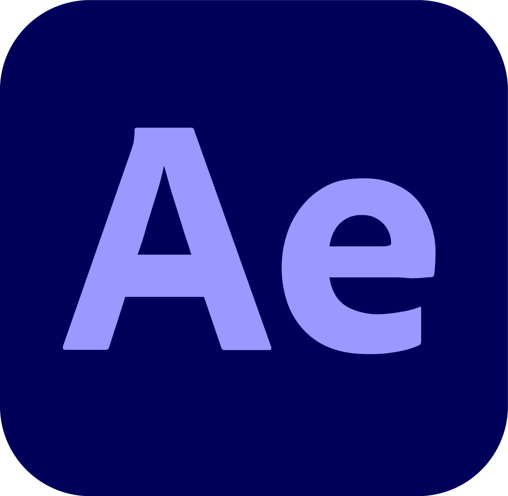

Promotional Video Production
Editing and post-production of a short promotional video for a local business.
Project Video Showcase
Watch the final promotional videos that were edited and produced for the client.
Project Overview
This project involved the full post-production workflow for a promotional video. Starting with raw footage, I handled video trimming, color grading, audio mixing, and adding motion graphics to create a polished and engaging final product. The goal was to produce a high-quality video that effectively communicates the client's brand message to their target audience.
- Client: Local Business
- Timeline: 2 Weeks
- Role: Video Editor, Post-Production Specialist
Tools Used
Adobe Premiere Pro
Primary editing software

Adobe After Effects
Motion graphics & effects
Adobe Audition
Advanced audio mixing
Visual Storytelling
Narrative & pacing